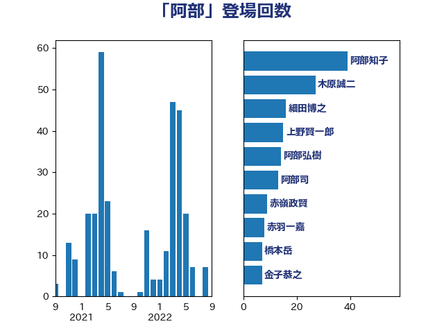

単語「阿部」

| 阿部知子 | 立憲民主党 | 39 回 |
| 木原誠二 | 自由民主党 | 27 回 |
| 細田博之 | 自由民主党 | 16 回 |
| 上野賢一郎 | 自由民主党 | 15 回 |
| 阿部弘樹 | 日本維新の会 | 14 回 |
| 阿部司 | 日本維新の会 | 13 回 |
| 赤嶺政賢 | 日本共産党 | 9 回 |
| 赤羽一嘉 | 公明党 | 8 回 |
| 橋本岳 | 自由民主党 | 7 回 |
| 金子恭之 | 自由民主党 | 7 回 |
| 宮本徹 | 日本共産党 | 6 回 |
| 山口俊一 | 自由民主党 | 5 回 |
| 鈴木馨祐 | 自由民主党 | 5 回 |
| 山本香苗 | 公明党 | 4 回 |
| 渡辺博道 | 自由民主党 | 4 回 |
| 田村憲久 | 自由民主党 | 4 回 |
| 高木毅 | 自由民主党 | 4 回 |
| 伊東良孝 | 自由民主党 | 3 回 |
| 山添拓 | 日本共産党 | 3 回 |
| 平井卓也 | 自由民主党 | 3 回 |
| 石田真敏 | 自由民主党 | 3 回 |
| 赤澤亮正 | 自由民主党 | 3 回 |
| 鈴木隼人 | 自由民主党 | 3 回 |
| 中谷一馬 | 立憲民主党 | 2 回 |
| 井坂信彦 | 立憲民主党 | 2 回 |
| 嘉田由紀子 | 無所属 | 2 回 |
| 守島正 | 日本維新の会 | 2 回 |
| 小林史明 | 自由民主党 | 2 回 |
| 小泉進次郎 | 自由民主党 | 2 回 |
| 山東昭子 | 自由民主党 | 2 回 |
| 山際大志郎 | 自由民主党 | 2 回 |
| 根本匠 | 自由民主党 | 2 回 |
| 清水貴之 | 日本維新の会 | 2 回 |
| 金田勝年 | 自由民主党 | 2 回 |
| 三宅伸吾 | 自由民主党 | 1 回 |
| 上杉謙太郎 | 自由民主党 | 1 回 |
| 中川宏昌 | 公明党 | 1 回 |
| 仁木博文 | 無所属 | 1 回 |
| 倉林明子 | 日本共産党 | 1 回 |
| 古屋範子 | 公明党 | 1 回 |
| 坂本哲志 | 自由民主党 | 1 回 |
| 城内実 | 自由民主党 | 1 回 |
| 堀内詔子 | 自由民主党 | 1 回 |
| 堀場幸子 | 日本維新の会 | 1 回 |
| 宗清皇一 | 自由民主党 | 1 回 |
| 小宮山泰子 | 立憲民主党 | 1 回 |
| 小田原潔 | 自由民主党 | 1 回 |
| 小里泰弘 | 自由民主党 | 1 回 |
| 小野泰輔 | 日本維新の会 | 1 回 |
| 山田勝彦 | 立憲民主党 | 1 回 |
| 岡本あき子 | 立憲民主党 | 1 回 |
| 川合孝典 | 国民民主党 | 1 回 |
| 後藤茂之 | 自由民主党 | 1 回 |
| 徳永エリ | 立憲民主党 | 1 回 |
| 末松信介 | 自由民主党 | 1 回 |
| 本田太郎 | 自由民主党 | 1 回 |
| 林芳正 | 自由民主党 | 1 回 |
| 河野太郎 | 自由民主党 | 1 回 |
| 海江田万里 | 立憲民主党 | 1 回 |
| 田嶋要 | 立憲民主党 | 1 回 |
| 緒方林太郎 | 無所属 | 1 回 |
| 義家弘介 | 自由民主党 | 1 回 |
| 菅直人 | 立憲民主党 | 1 回 |
| 藤原崇 | 自由民主党 | 1 回 |
| 西銘恒三郎 | 自由民主党 | 1 回 |
| 豊田俊郎 | 自由民主党 | 1 回 |
| 足立康史 | 日本維新の会 | 1 回 |
| 近藤昭一 | 立憲民主党 | 1 回 |
| 野田佳彦 | 立憲民主党 | 1 回 |
| 野田聖子 | 自由民主党 | 1 回 |
| 鈴木貴子 | 自由民主党 | 1 回 |
| 長妻昭 | 立憲民主党 | 1 回 |
| 高橋千鶴子 | 日本共産党 | 1 回 |
| 高良鉄美 | 無所属 | 1 回 |
| 黄川田仁志 | 自由民主党 | 1 回 |